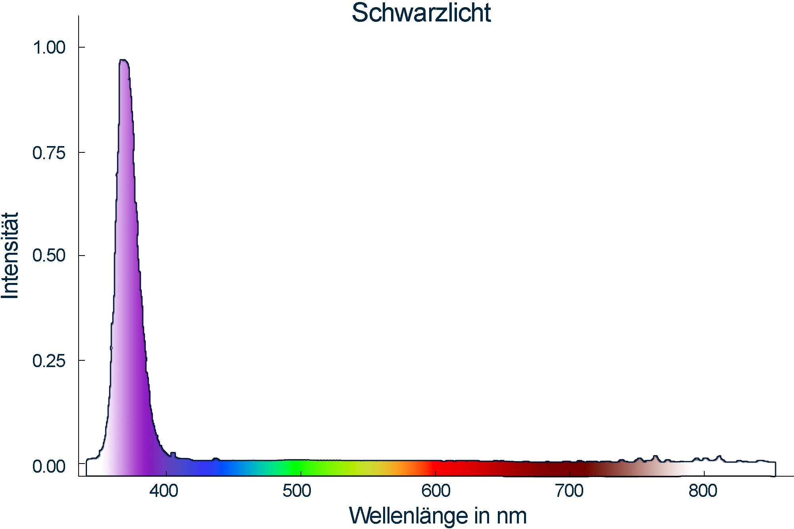

CCD-Spektrometer


Das ist eine spezielle Leuchtstoffröhre, die kurzwellige UV-Strahlung und nur in geringem Maße sichtbares Licht abgibt. Diese Lampen werden im medizinischen Bereich zur Erkennung von Hautkrankeiten verwendet. Man kann sie auch zum Nachweis von Blut und Sperma einsetzen.